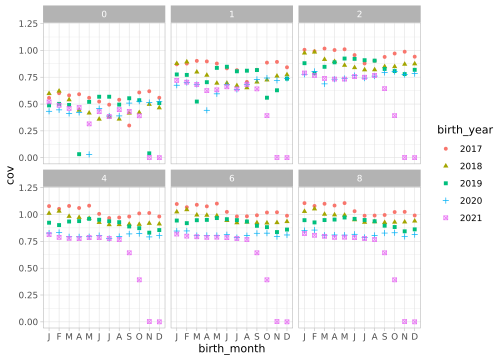
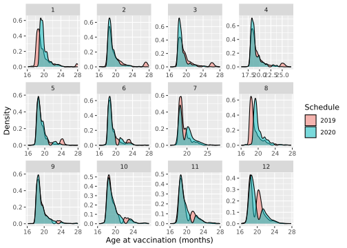

Hai Duong: Measles
Duc Du, Thinh Ong
2020-01-29 (update: 2022-11-07)
Last updated: 2022-11-07
Checks: 6 1
Knit directory: Vaccination_COVID/
This reproducible R Markdown analysis was created with workflowr (version 1.7.0). The Checks tab describes the reproducibility checks that were applied when the results were created. The Past versions tab lists the development history.
The R Markdown file has unstaged changes. To know which version of
the R Markdown file created these results, you’ll want to first commit
it to the Git repo. If you’re still working on the analysis, you can
ignore this warning. When you’re finished, you can run
wflow_publish to commit the R Markdown file and build the
HTML.
Great job! The global environment was empty. Objects defined in the global environment can affect the analysis in your R Markdown file in unknown ways. For reproduciblity it’s best to always run the code in an empty environment.
The command set.seed(20210126) was run prior to running
the code in the R Markdown file. Setting a seed ensures that any results
that rely on randomness, e.g. subsampling or permutations, are
reproducible.
Great job! Recording the operating system, R version, and package versions is critical for reproducibility.
Nice! There were no cached chunks for this analysis, so you can be confident that you successfully produced the results during this run.
Great job! Using relative paths to the files within your workflowr project makes it easier to run your code on other machines.
Great! You are using Git for version control. Tracking code development and connecting the code version to the results is critical for reproducibility.
The results in this page were generated with repository version b6f5cf0. See the Past versions tab to see a history of the changes made to the R Markdown and HTML files.
Note that you need to be careful to ensure that all relevant files for
the analysis have been committed to Git prior to generating the results
(you can use wflow_publish or
wflow_git_commit). workflowr only checks the R Markdown
file, but you know if there are other scripts or data files that it
depends on. Below is the status of the Git repository when the results
were generated:
Ignored files:
Ignored: .Rhistory
Ignored: .Rproj.user/
Ignored: R/
Untracked files:
Untracked: .env
Untracked: _targets.R
Untracked: analysis/archive/check_haiduong.Rmd
Untracked: analysis/archive/check_haiduong.docx
Untracked: analysis/archive/clean.Rmd
Untracked: analysis/merge_clean.Rmd
Untracked: analysis/note.R
Untracked: analysis/vacc_info.Rmd
Untracked: code/01_import_merge_new.R
Untracked: packages.R
Unstaged changes:
Deleted: 03_analysis.R
Deleted: analysis/check_haiduong.Rmd
Deleted: analysis/check_haiduong.docx
Deleted: analysis/clean.Rmd
Modified: analysis/haiduong_measles.Rmd
Deleted: analysis/merge.Rmd
Modified: misc_background.Rmd
Note that any generated files, e.g. HTML, png, CSS, etc., are not included in this status report because it is ok for generated content to have uncommitted changes.
These are the previous versions of the repository in which changes were
made to the R Markdown (analysis/haiduong_measles.Rmd) and
HTML (docs/haiduong_measles.html) files. If you’ve
configured a remote Git repository (see ?wflow_git_remote),
click on the hyperlinks in the table below to view the files as they
were in that past version.
| File | Version | Author | Date | Message |
|---|---|---|---|---|
| Rmd | b6f5cf0 | thinhong | 2022-10-04 | add children vaccinated in 2021, 2022 |
| html | b6f5cf0 | thinhong | 2022-10-04 | add children vaccinated in 2021, 2022 |
| Rmd | b188ca1 | thinhong | 2022-10-02 | update plot by scheduled month-year of receiving the vaccine instead of birth month |
| html | b188ca1 | thinhong | 2022-10-02 | update plot by scheduled month-year of receiving the vaccine instead of birth month |
| Rmd | e10fdae | thinhong | 2022-10-02 | optimise code for coverage, add comparison of cohorts in different years |
| html | e10fdae | thinhong | 2022-10-02 | optimise code for coverage, add comparison of cohorts in different years |
| Rmd | 9de46e5 | thinhong | 2022-09-29 | optimise code for coverage: create a big table then filter to plot |
| Rmd | 11694c5 | thinhong | 2022-08-29 | change x axis labels to 3 months |
| html | 11694c5 | thinhong | 2022-08-29 | change x axis labels to 3 months |
| Rmd | 74070b7 | thinhong | 2022-08-29 | update Hai Duong vaccine coverage for 2017, 2018, 2 doses; clarify axis titles |
| html | 74070b7 | thinhong | 2022-08-29 | update Hai Duong vaccine coverage for 2017, 2018, 2 doses; clarify axis titles |
| Rmd | 3b8e1fa | thinhong | 2022-08-25 | add coverage for mr and mmr |
| html | 3b8e1fa | thinhong | 2022-08-25 | add coverage for mr and mmr |
| Rmd | 8629620 | thinhong | 2022-08-25 | add vaccine coverage and confidence interval |
| html | 8629620 | thinhong | 2022-08-25 | add vaccine coverage and confidence interval |
Vaccine coverage
At least 1 shot
Measles
2018
2019
2020
2021
Compare cohorts between years
Measles or MR
2018
2019
2020
2021
Compare cohorts between years

Measles, MR or MMR
2018
2019
2020
2021
Compare cohorts between years
2 shots
Public vaccines only (Measles, MR)
2018
2019
2020
2021
Compare cohorts between years
Any vaccine (Measles, MR, MMR)
2018
2019
2020
2021
Compare cohorts between years
Measles and COVID-19 vaccination per month
* High peak of MR shots in Nov 2019 * No disruption in Apr 2020 * Disruptions in Aug 2020 and Feb 2021
Vaccination campaign in Nov 2019
An MR vaccination campaign is triggered during this time in Hai Duong, focusing on children 1-5 year-old # No disruption in Apr 2020 but in Aug 2020 and Feb 2021
The monthly vaccination date at public clinics is usually at the end of the month. In Mar 2020: right before lockdown they vaccinate children and right after lockdown they came back to vaccinate children
Hai Duong had a Hai Duong city-wide lockdown from 14/8-28/8, this time looks like they only organised the vaccination day in Sep so all children scheduled in Aug miss the shot
Zoom in 2021
Hai Duong had a province-wide lockdown from 28/1/2021 - 15/2 (Directive 15), 16/2 - 2/3 (Directive 16), 3/3 - 17/3 (Directive 15), 18/3 - 31/3 (Directive 19)
Directive 16 > 15 > 19
Public vs private
First let decide how a shot is public or private
hospital other private public unknown
392 2168 36868 355461 12846 Extract children who get 2 shots
Some received the same vaccine in the same day, filter them out and continue
Some received 3 shots, filtered them out.
Change dataset from long to wide format
Aggregate them by month
Line plot
# A tibble: 6 × 10
pid denom low_ci high_ci vyear_1st vmonth_1st shot1 shot2 pct2 vacdate_…¹
<dbl> <dbl> <dbl> <dbl> <dbl> <dbl> <fct> <chr> <dbl> <date>
1 11 26 23.4 63.1 2020 1 private priv… 42.3 2020-01-01
2 52 107 38.8 58.5 2020 1 public priv… 48.6 2020-01-01
3 33 46 56.5 84.0 2020 8 private priv… 71.7 2020-08-01
4 56 132 33.9 51.3 2020 8 public priv… 42.4 2020-08-01
5 11 17 38.3 85.8 2021 2 private priv… 64.7 2021-02-01
6 32 69 34.3 58.8 2021 2 public priv… 46.4 2021-02-01
# … with abbreviated variable name ¹vacdate_1st# A tibble: 18 × 10
pid denom low_ci high_ci vyear_1st vmonth_1st shot1 shot2 pct2 vacdate_…¹
<dbl> <dbl> <dbl> <dbl> <dbl> <dbl> <fct> <chr> <dbl> <date>
1 31 62 37.0 63.0 2021 3 priva… priv… 50 2021-03-01
2 446 2911 14.0 16.7 2021 3 public priv… 15.3 2021-03-01
3 25 54 32.6 60.4 2021 4 priva… priv… 46.3 2021-04-01
4 312 1728 16.3 20.0 2021 4 public priv… 18.1 2021-04-01
5 18 50 22.9 50.8 2021 5 priva… priv… 36 2021-05-01
6 269 1681 14.3 17.8 2021 5 public priv… 16.0 2021-05-01
7 29 45 48.8 78.1 2021 6 priva… priv… 64.4 2021-06-01
8 359 2110 15.4 18.7 2021 6 public priv… 17.0 2021-06-01
9 27 51 38.5 67.1 2021 7 priva… priv… 52.9 2021-07-01
10 377 2103 16.3 19.6 2021 7 public priv… 17.9 2021-07-01
11 26 36 54.8 85.8 2021 8 priva… priv… 72.2 2021-08-01
12 384 1807 19.4 23.2 2021 8 public priv… 21.3 2021-08-01
13 11 30 19.9 56.1 2021 9 priva… priv… 36.7 2021-09-01
14 278 1438 17.3 21.5 2021 9 public priv… 19.3 2021-09-01
15 17 29 38.9 76.5 2021 10 priva… priv… 58.6 2021-10-01
16 256 1021 22.4 27.9 2021 10 public priv… 25.1 2021-10-01
17 10 14 41.9 91.6 2021 11 priva… priv… 71.4 2021-11-01
18 178 356 44.7 55.3 2021 11 public priv… 50 2021-11-01
# … with abbreviated variable name ¹vacdate_1stPopulation level
Children who got 2 shots
Age at vaccination distribution
Measles
Use full data

Only children vaccinated from 8-16 months
measles <- measles_all[which(measles_all$vacname == "Measles" & measles_all$skd_year %in% c(2019, 2020) & measles_all$vagem >= 8 & measles_all$vagem <= 16), c("vagem", "skd_month", "skd_year")]
measles$skd_year <- factor(measles$skd_year)
tmp <- measles[measles$skd_month == 1 & measles$skd_year == 2019,]
d_tmp <- density(tmp$vagem)
d_tmp <- data.frame(d_tmp[1:2])
ggplot(measles, aes(x = vagem, fill = skd_year)) +
geom_density(alpha = 0.5) +
facet_wrap(~ skd_month, scales = "free") +
labs(x = "Age at vaccination (months)", y = "Density", fill = "Schedule")# Kullback-Leibler divergence with seewave
# https://rug.mnhn.fr/seewave/HTML/MAN/kl.dist.html
months_list <- 1:12
kl <- numeric(12)
for (im in months_list) {
tmp <- measles$vagem[measles$skd_year == 2019 & measles$skd_month == im]
tmp <- density(tmp)
tmp <- data.frame(tmp[1:2])
d19 <- matrix(c(tmp$x, tmp$y), ncol = 2, dimnames = list(NULL, c("x", "y")))
tmp <- measles$vagem[measles$skd_year == 2020 & measles$skd_month == im]
tmp <- density(tmp)
tmp <- data.frame(tmp[1:2])
d20 <- matrix(c(tmp$x, tmp$y), ncol = 2, dimnames = list(NULL, c("x", "y")))
kl[im] <- kl.dist(d19, d20)$D
}
df_plot <- data.frame(month = factor(months_list), divergence = kl)
ggplot(df_plot, aes(x = month, y = divergence)) +
geom_bar(stat = "identity")MR

R version 4.0.0 (2020-04-24)
Platform: x86_64-pc-linux-gnu (64-bit)
Running under: Ubuntu 18.04.5 LTS
Matrix products: default
BLAS: /opt/R/4.0/lib/R/lib/libRblas.so
LAPACK: /opt/R/4.0/lib/R/lib/libRlapack.so
locale:
[1] LC_CTYPE=C.UTF-8 LC_NUMERIC=C LC_TIME=C.UTF-8
[4] LC_COLLATE=C.UTF-8 LC_MONETARY=C.UTF-8 LC_MESSAGES=C.UTF-8
[7] LC_PAPER=C.UTF-8 LC_NAME=C LC_ADDRESS=C
[10] LC_TELEPHONE=C LC_MEASUREMENT=C.UTF-8 LC_IDENTIFICATION=C
attached base packages:
[1] stats graphics grDevices utils datasets methods base
other attached packages:
[1] seewave_2.2.0 plotly_4.10.0 ggsci_2.9 gtsummary_1.5.2
[5] ggplot2_3.3.5 lubridate_1.8.0 tidyr_1.2.0 dplyr_1.0.8
[9] data.table_1.14.2
loaded via a namespace (and not attached):
[1] Rcpp_1.0.8 assertthat_0.2.1 rprojroot_2.0.3
[4] digest_0.6.29 utf8_1.2.2 R6_2.5.1
[7] signal_0.7-7 evaluate_0.15 httr_1.4.4
[10] highr_0.9 pillar_1.8.1 rlang_1.0.6
[13] lazyeval_0.2.2 rstudioapi_0.14 whisker_0.4
[16] jquerylib_0.1.4 rmarkdown_2.11 labeling_0.4.2
[19] tuneR_1.4.1 stringr_1.4.0 htmlwidgets_1.5.4
[22] munsell_0.5.0 compiler_4.0.0 httpuv_1.6.5
[25] xfun_0.29 pkgconfig_2.0.3 htmltools_0.5.2
[28] tidyselect_1.2.0 tibble_3.1.8 workflowr_1.7.0
[31] fansi_1.0.3 viridisLite_0.4.0 withr_2.5.0
[34] later_1.3.0 MASS_7.3-51.5 grid_4.0.0
[37] jsonlite_1.8.3 gtable_0.3.0 lifecycle_1.0.3
[40] DBI_1.1.2 git2r_0.29.0 magrittr_2.0.3
[43] scales_1.1.1 cli_3.4.1 stringi_1.7.6
[46] farver_2.1.0 broom.helpers_1.6.0 fs_1.5.2
[49] promises_1.2.0.1 bslib_0.3.1 ellipsis_0.3.2
[52] generics_0.1.2 vctrs_0.5.0 RColorBrewer_1.1-2
[55] tools_4.0.0 glue_1.6.2 purrr_0.3.5
[58] crosstalk_1.2.0 fastmap_1.1.0 yaml_2.3.6
[61] colorspace_2.0-3 gt_0.4.0 knitr_1.37
[64] sass_0.4.0